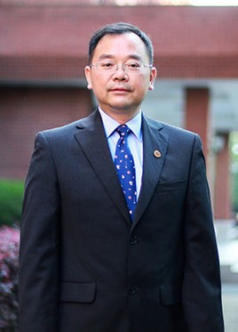
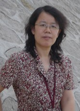

时间：2017年10月21日 下午13:30-15:00
地址：浙大玉泉校区教七影视厅
周傲英（华东师范大学）华东师范大学新工科建设探索--以数据学院为例
周傲英，华东师范大学党委常委、副校长，计算机科学与软件工程学院教授，博士生导师，第七届国务院学科评议组成员。主要从事数据管理及应用研究，研究兴趣主要包括Web数据管理、数据密集型计算、内存集群计算、大数据基准测试和性能优化。曾获得国家杰出青年基金，入选长江学者特聘教授。入选上海市科技启明星计划、上海市优秀学科带头人、教育部跨世纪人才等人才计划。获得国务院特殊津贴、霍英东青年教师基金奖励和六次教育部上海市科技进步二等奖。目前担任中国计算机学会数据库专业委员会副主任、ACM SIGMOD China副主席。担任《计算机学报》副主编，曾经和正在担任《VLDB Journal》、《Journal of Computer Science and Technology》、《Data Science and Engineering》、《World Wide World Journal》等期刊的编委；曾任ER2004大会主席、ICDE2009、 ICDE2012 PC Vice-Chair，VLDB2014 PC Co-Chair。
汪卫（复旦大学）大数据人才差异性培养
汪卫，复旦大学计算机科学技术学院教授、副院长，1970年3月出生于山东省济南市，1992年毕业于山东大学计算机系。目前担任中国计算机学会数据库专业委员会委员，上海市计算机学会理事，数据库专业委员会副主任。 作为主要参与者获得上海市科技进步一等奖一项，二等奖两项，三等奖一项，并或高等教育国家级教学成果二等奖一次。2005入选教育部“新世纪优秀人才支持计划”。目前担任中国计算机学会数据库专业委员会委员，上海市计算机学会理事，数据库专业委员会副主任。并担任ICDM、SIAM DM、CIKM等重要国际学术会议的程序委员。
陈红（中国人民大学）数据库系统概论MOOC建设
陈红，中国计算机学会数据库专业委员会委员、传感器网络专业委员会委员。主持和参加国家重大专项项目、国家973项目、国家863计划项目、国家自然科学基金项目、教育部科学技术研究重点项目等项目30余项；在IEEE Tran. On Data and Knowledge Engineering (TKDE) 、IEEE Tran. On Fuzzy System （TFS）、Information Sciences、 Data & Knowledge Engineering (DKE)等国内外学术期刊以及KDD、ICPP、DASFAA、IWQoS等国内外学术会议上发表论文200余篇，出版数据库方面的著译作8部。参加了具有自主版权的并行数据库系统软件的研制，主持了具有自主版权的联机分析处理系列软件的研制。申请和获得国家发明专利多项。获北京市科学技术进步二等奖、教育部科学技术进步二等奖、国家精品课程奖、北京市精品课程奖、中国人民大学十大教学标兵等奖励，2005年入选教育部新世纪优秀人才支持计划。
王伟（同济大学）数据科学通识课程的建设理念与实践方法

王伟，男，毕业于同济大学计算机科学与技术系，获博士学位，现为同济大学计算机科学与技术系副教授，硕士生导师，计算机系主任助理，电信学院青年联谊会副秘书长，CCF体系结构专委会委员，CCF YOCSEF上海学术委员学术秘书（2012年至2013年度），IBM 360精英讲师团成员。2007年赴IBM中国研究院作为实习助理研究员，2008年8月赴SAP中国研究中心作为实习助理研究员，2009年赴德国Erlangen Nuernberg大学进行学术交流，2011年赴芬兰Aalto大学参与师资培训交流，2013年赴美国Wisconsin大学Madison分校作高级访问学者。入选2009年《同济大学青年优秀人才培养行动计划》、2011年《同济大学青年英才计划（优秀青年教师计划）》及2013年《同济大学青年英才计划（青年教学科研骨干计划）》。